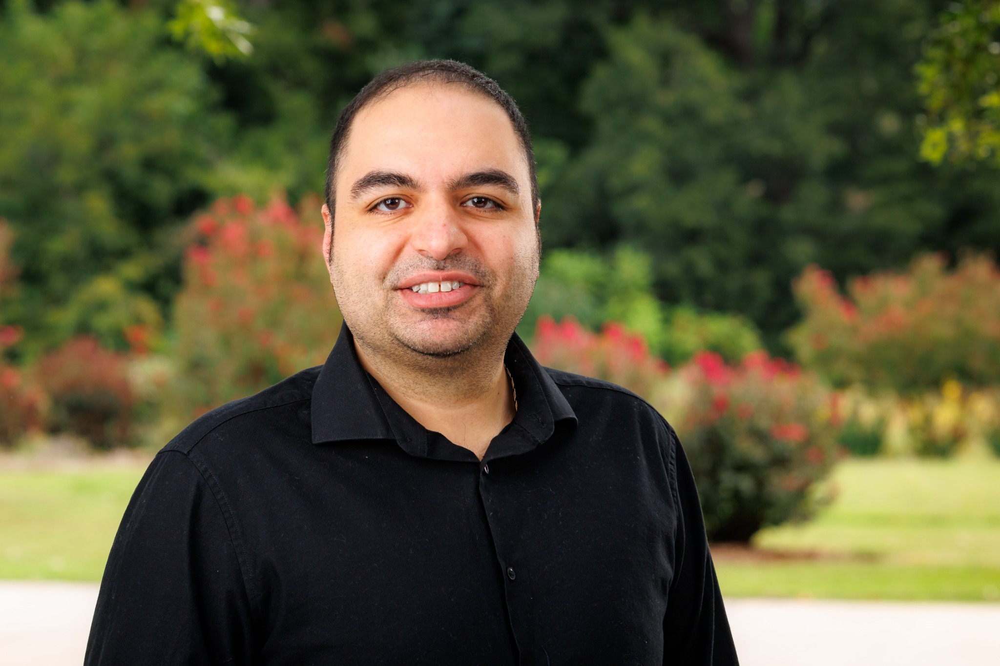
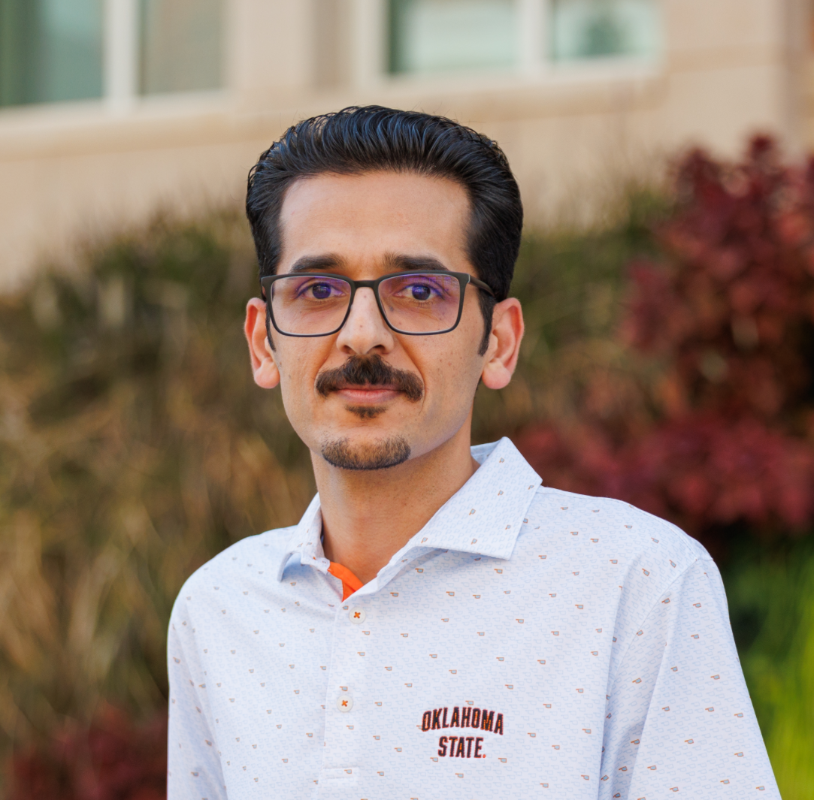

HYDROEXLABOur Team
Meet the researchers and students advancing the science of hydrological extremes and water resources resilience.
Principal Investigator

KJ Jafarzadegan
Dr. KJ Jafarzadegan is an Assistant Professor in the Department of Biosystems and Agricultural Engineering at Oklahoma State University. His appointment includes research and Extension focused on the characterization, modeling, and management of hydrological extremes. His laboratory utilizes a wide range of tools, including hydrologic and hydrodynamic models, data assimilation and machine learning techniques, satellite remote sensing data, and statistical methods. Before joining OSU, Dr. Jafarzadegan was a Senior Research Associate at the University of Alabama.
Research Interests
- Hydrological Extremes Modeling
- Flood and Drought Forecasting
- Hazard, Vulnerability, and Risk Assessment
- Coupled Human–Hydrological System Modeling
- Integrated Water Resources Management
Education
Ph.D. in Civil Engineering
Purdue University, USA
M.Sc. in Civil Engineering
University of Tehran, Iran
B.Sc. in Civil Engineering
Isfahan University of Technology, Iran
Graduate Students
Joy Brato Shil
PhD Student
Originally from Bangladesh, Joy earned his master's degree from TU Dresden, Germany. His research focuses on soil moisture prediction in data-scarce regions and enhancing water security in southwestern Oklahoma through rainwater harvesting and managed aquifer recharge.

Hashem Zahedipour
PhD Student
Originally from Iran, Hashem earned his master's degree in Meteorology from Iowa State University. His research focuses on developing novel AI-based approaches for streamflow prediction and forecasting to improve hydrologic predictions.
Daniel Amponash
MS Student
Daniel earned his bachelor's degree in Meteorology and Climate Science from Kwame Nkrumah University of Science and Technology in Ghana. His research investigates the reliability, vulnerability, and resilience of Oklahoma's water supply resources during drought conditions.